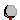
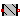
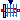
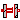

Modelica.Thermal.HeatTransfer.Components.ThermalResistor
Modelica.Thermal.HeatTransfer.Components.ThermalResistor
Lumped thermal components
Extends from Modelica.Icons.Package (Icon for standard packages).
| Name | Description |
|---|---|
|  HeatCapacitor | Lumped thermal element storing heat |
| ThermalConductor | Lumped thermal element transporting heat without storing it |
|  ThermalResistor | Lumped thermal element transporting heat without storing it |
|  Convection | Lumped thermal element for heat convection (Q_flow = Gc*dT) |
| ConvectiveResistor | Lumped thermal element for heat convection (dT = Rc*Q_flow) |
|  BodyRadiation | Lumped thermal element for radiation heat transfer |
| ThermalCollector | Collects m heat flows |
Lumped thermal element storing heat
This is a generic model for the heat capacity of a material. No specific geometry is assumed beyond a total volume with uniform temperature for the entire volume. Furthermore, it is assumed that the heat capacity is constant (independent of temperature).
The temperature T [Kelvin] of this component is a state. A default of T = 25 degree Celsius (= SIunits.Conversions.from_degC(25)) is used as start value for initialization. This usually means that at start of integration the temperature of this component is 25 degrees Celsius. You may, of course, define a different temperature as start value for initialization. Alternatively, it is possible to set parameter steadyStateStart to true. In this case the additional equation 'der(T) = 0' is used during initialization, i.e., the temperature T is computed in such a way that the component starts in steady state. This is useful in cases, where one would like to start simulation in a suitable operating point without being forced to integrate for a long time to arrive at this point.
Note, that parameter steadyStateStart is not available in the parameter menu of the simulation window, because its value is utilized during translation to generate quite different equations depending on its setting. Therefore, the value of this parameter can only be changed before translating the model.
This component may be used for complicated geometries where the heat capacity C is determined my measurements. If the component consists mainly of one type of material, the mass m of the component may be measured or calculated and multiplied with the specific heat capacity cp of the component material to compute C:
C = cp*m.
Typical values for cp at 20 degC in J/(kg.K):
aluminium 896
concrete 840
copper 383
iron 452
silver 235
steel 420 ... 500 (V2A)
wood 2500
| Name | Description |
|---|---|
| C | Heat capacity of element (= cp*m) [J/K] |
| Name | Description |
|---|---|
| port |
Lumped thermal element transporting heat without storing it
This is a model for transport of heat without storing it; see also: ThermalResistor. It may be used for complicated geometries where the thermal conductance G (= inverse of thermal resistance) is determined by measurements and is assumed to be constant over the range of operations. If the component consists mainly of one type of material and a regular geometry, it may be calculated, e.g., with one of the following equations:
Conductance for a box geometry under the assumption that heat flows along the box length:
G = k*A/L
k: Thermal conductivity (material constant)
A: Area of box
L: Length of box
Conductance for a cylindrical geometry under the assumption that heat flows from the inside to the outside radius of the cylinder:
G = 2*pi*k*L/log(r_out/r_in)
pi : Modelica.Constants.pi
k : Thermal conductivity (material constant)
L : Length of cylinder
log : Modelica.Math.log;
r_out: Outer radius of cylinder
r_in : Inner radius of cylinder
Typical values for k at 20 degC in W/(m.K):
aluminium 220
concrete 1
copper 384
iron 74
silver 407
steel 45 .. 15 (V2A)
wood 0.1 ... 0.2
Extends from Interfaces.Element1D (Partial heat transfer element with two HeatPort connectors that does not store energy).
| Name | Description |
|---|---|
| G | Constant thermal conductance of material [W/K] |
| Name | Description |
|---|---|
| port_a | |
| port_b |
Modelica.Thermal.HeatTransfer.Components.ThermalResistorLumped thermal element transporting heat without storing it
This is a model for transport of heat without storing it, same as the ThermalConductor but using the thermal resistance instead of the thermal conductance as a parameter. This is advantageous for series connections of ThermalResistors, especially if it shall be allowed that a ThermalResistance is defined to be zero (i.e. no temperature difference).
Extends from Interfaces.Element1D (Partial heat transfer element with two HeatPort connectors that does not store energy).
| Name | Description |
|---|---|
| R | Constant thermal resistance of material [K/W] |
| Name | Description |
|---|---|
| port_a | |
| port_b |
Lumped thermal element for heat convection (Q_flow = Gc*dT)
This is a model of linear heat convection, e.g., the heat transfer between a plate and the surrounding air; see also: ConvectiveResistor. It may be used for complicated solid geometries and fluid flow over the solid by determining the convective thermal conductance Gc by measurements. The basic constitutive equation for convection is
Q_flow = Gc*(solid.T - fluid.T);
Q_flow: Heat flow rate from connector 'solid' (e.g., a plate)
to connector 'fluid' (e.g., the surrounding air)
Gc = G.signal[1] is an input signal to the component, since Gc is nearly never constant in practice. For example, Gc may be a function of the speed of a cooling fan. For simple situations, Gc may be calculated according to
Gc = A*h A: Convection area (e.g., perimeter*length of a box) h: Heat transfer coefficient
where the heat transfer coefficient h is calculated from properties of the fluid flowing over the solid. Examples:
Machines cooled by air (empirical, very rough approximation according to R. Fischer: Elektrische Maschinen, 10th edition, Hanser-Verlag 1999, p. 378):
h = 7.8*v^0.78 [W/(m2.K)] (forced convection)
= 12 [W/(m2.K)] (free convection)
where
v: Air velocity in [m/s]
Laminar flow with constant velocity of a fluid along a flat plate where the heat flow rate from the plate to the fluid (= solid.Q_flow) is kept constant (according to J.P.Holman: Heat Transfer, 8th edition, McGraw-Hill, 1997, p.270):
h = Nu*k/x;
Nu = 0.453*Re^(1/2)*Pr^(1/3);
where
h : Heat transfer coefficient
Nu : = h*x/k (Nusselt number)
Re : = v*x*rho/mue (Reynolds number)
Pr : = cp*mue/k (Prandtl number)
v : Absolute velocity of fluid
x : distance from leading edge of flat plate
rho: density of fluid (material constant
mue: dynamic viscosity of fluid (material constant)
cp : specific heat capacity of fluid (material constant)
k : thermal conductivity of fluid (material constant)
and the equation for h holds, provided
Re < 5e5 and 0.6 < Pr < 50
| Name | Description |
|---|---|
| Gc | Signal representing the convective thermal conductance in [W/K] [W/K] |
| solid | |
| fluid |
Lumped thermal element for heat convection (dT = Rc*Q_flow)
This is a model of linear heat convection, e.g., the heat transfer between a plate and the surrounding air; same as the Convection component but using the convective resistance instead of the convective conductance as an input. This is advantageous for series connections of ConvectiveResistors, especially if it shall be allowed that a convective resistance is defined to be zero (i.e. no temperature difference).
| Name | Description |
|---|---|
| Rc | Signal representing the convective thermal resistance in [K/W] [K/W] |
| solid | |
| fluid |
Lumped thermal element for radiation heat transfer
This is a model describing the thermal radiation, i.e., electromagnetic radiation emitted between two bodies as a result of their temperatures. The following constitutive equation is used:
Q_flow = Gr*sigma*(port_a.T^4 - port_b.T^4);
where Gr is the radiation conductance and sigma is the Stefan-Boltzmann constant (= Modelica.Constants.sigma). Gr may be determined by measurements and is assumed to be constant over the range of operations.
For simple cases, Gr may be analytically computed. The analytical equations use epsilon, the emission value of a body which is in the range 0..1. Epsilon=1, if the body absorbs all radiation (= black body). Epsilon=0, if the body reflects all radiation and does not absorb any.
Typical values for epsilon: aluminium, polished 0.04 copper, polished 0.04 gold, polished 0.02 paper 0.09 rubber 0.95 silver, polished 0.02 wood 0.85..0.9
Analytical Equations for Gr
Small convex object in large enclosure (e.g., a hot machine in a room):
Gr = e*A
where
e: Emission value of object (0..1)
A: Surface area of object where radiation
heat transfer takes place
Two parallel plates:
Gr = A/(1/e1 + 1/e2 - 1)
where
e1: Emission value of plate1 (0..1)
e2: Emission value of plate2 (0..1)
A : Area of plate1 (= area of plate2)
Two long cylinders in each other, where radiation takes place from the inner to the outer cylinder):
Gr = 2*pi*r1*L/(1/e1 + (1/e2 - 1)*(r1/r2))
where
pi: = Modelica.Constants.pi
r1: Radius of inner cylinder
r2: Radius of outer cylinder
L : Length of the two cylinders
e1: Emission value of inner cylinder (0..1)
e2: Emission value of outer cylinder (0..1)
Extends from Interfaces.Element1D (Partial heat transfer element with two HeatPort connectors that does not store energy).
| Name | Description |
|---|---|
| Gr | Net radiation conductance between two surfaces (see docu) [m2] |
| Name | Description |
|---|---|
| port_a | |
| port_b |
Collects m heat flows
This is a model to collect the heat flows from m heatports to one single heatport.
| Name | Description |
|---|---|
| m | Number of collected heat flows |
| Name | Description |
|---|---|
| port_a[m] | |
| port_b |